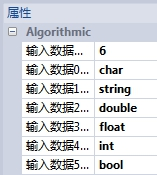
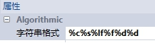

Công cụ ghi TXT dùng để ghi dữ liệu linh hoạt và thuận tiện, hỗ trợ phân tích sau này. Thường kết hợp với công cụ tạo gói dữ liệu và công cụ phân tích chuỗi để tùy ý ghép nối, chỉnh sửa nhiều dạng dữ liệu đầu ra.
| Phân loại | Tên tham số | Mô tả tham số |
|---|---|---|
| Cửa sổ thuộc tính | Đường dẫn tệp | Đường lưu tệp TXT. |
| Cửa sổ hình ảnh | Không | Không |
| Dữ liệu liên kết | Tên văn bản | Tên tệp TXT, cần kèm hậu tố (*.txt). |
| Nội dung ghi | Nội dung sẽ ghi vào tệp TXT, có thể dùng chung với công cụ tạo gói dữ liệu và công cụ phân tích chuỗi. | |
| Ghi đè nội dung | Chọn ghi đè hay không lên nội dung cũ. | |
| Cửa sổ nâng cao | Không | Không |
| Phân loại | Tên tham số | Mô tả tham số |
|---|---|---|
| Cửa sổ giám sát | Kết quả thực thi | Kết quả chạy của công cụ. |
| Thời gian thực thi | Thời gian công cụ thực thi. | |
| Cửa sổ hình ảnh | Không | Không |
| Dữ liệu liên kết | Không | Không |
Kết hợp với công cụ tạo gói dữ liệu và công cụ phân tích chuỗi, có thể tùy ý chỉnh sửa, ghép nối nhiều nguồn dữ liệu, làm cho văn bản đầu ra phong phú hơn.
Hình 1 (a) là một nhóm dữ liệu nhiều kiểu được tạo bởi công cụ tạo gói dữ liệu; hình 1 (b) là định dạng chuyển đổi chuỗi tương ứng (biến kiểu bool xuất 0 hoặc 1, dùng %d).


参见“\Samples\TXT文本写入工具.gvp”。